← Hope Kids 台中分部
核心問題
這十七章在講什麼
這不是單純「好人 vs. 壞人」，也不是「只要忍耐，最後就會成功」的故事。10 月課程範例〈神掌權的等待〉
真正的核心是：當掃羅想靠自己的力量抓住王位時，大衛卻學習不靠自己的方法奪取王位，而是在等待中相信神仍然掌權。大衛成為王是逐步發生的：撒上 16 章被膏立 → 18–30 章等待與逃亡 → 撒下 2 章作猶大王 → 撒下 5 章作全以色列王。
課程範例給的正確方向是：信心不是忍耐到成功，而是相信神掌權，因此即使有理由、有機會，也不用靠搶奪、報復或控制得到神所應許的；等待中仍然可以求問、依靠神。
神的屬性與人的回應
取自課程範例四、五、六
神是掌權的撒上 16 – 撒下 5屬性
王位最終不是掃羅抓得住，也不是大衛搶得到的。真正決定王權的是神。
神是信實的撒上 16:13；撒下 2:4屬性
神應許的事，不代表會立刻發生。從被膏立到作王，中間是很長的等待。
神有祂的時間撒上 26:9-11屬性
神不只在乎結果，也在乎我們走向結果的方法。
保守・帶領・成就撒上 18 – 撒下 2作為
大衛一次次被保守逃脫、一次次求問。最後不是大衛殺死掃羅。
警覺・克制・等候對應三節點回應
留意自己是否因害怕而想抓住；有機會也不用錯的方法；把結果交給神，繼續走下一步。
15 張故事圖裡，幾乎每一張都看得到「手」：掃羅的手擲槍、下令；大衛的手只割衣角、擋住亞比篩、張開禱告。講故事時可以一直請孩子看「他的手在做什麼」。
課程指標
知識
知道掃羅追殺大衛的起點是害怕失去，不只是嫉妒。
知道大衛兩次可以殺掃羅卻沒有動手（撒上 24、26）。
知道掃羅死後大衛先求問神，而且在撒下 2 章只作猶大的王。
態度
別人被稱讚時，能辨認：「我是不是害怕自己不重要了？」
有機會做，不代表這件事就是對的。
不報復，但會保護自己：離開、說「不要」、找可信任的大人。
反思
好的結果，也不能靠錯的方法得到。
不報復不等於不設界線。
等待不是什麼都不做，而是在等待中繼續聽神、走下一步。
害怕、受傷、等不到的時候，我可以像大衛一樣禱告：說出來、交給神、求帶領。
課程三節點
取自課程範例二、三
節點一 · 害怕｜撒上 18–20｜#01-05
害怕使掃羅
想抓住、控制
- 路徑：害怕失去 → 嫉妒 → 想控制 → 傷害別人。
- 關鍵句：「大衛沒有攻擊掃羅，但掃羅卻開始把大衛當成敵人。」
- 結論：當我害怕失去時，我可能會開始用錯的方法保護自己。
節點二 · 克制｜撒上 21–30｜#06-09
大衛不靠錯的方法
搶奪
- 兩次重複：洞穴（24 章）與營中（26 章），有理由、有機會、有能力，仍然不動手。
- 關鍵句：「有機會做，不代表這件事情就是對的。」
- 結論：好的結果，也不能靠錯的方法得到。
節點三 · 等候｜撒上 31 – 撒下 2｜#10-15
大衛繼續求問，
等神帶領
- 掃羅死了，大衛悲傷而不是高興；也沒有立刻自立為王，先求問神。
- 關鍵句：「大衛還在等候神下一步的帶領。」
- 結論：等待不是什麼都不做，而是在等待中繼續聽神、走下一步。
關聯經文
和合本 · 上課前請對照手邊譯本
從這日起，掃羅就怒視大衛。撒母耳記上 18:9
願耶和華在你我中間判斷是非，在你身上為我伸冤，我卻不親手加害於你。撒母耳記上 24:12 · 課程範例關鍵經文
大衛對亞比篩說：「不可害死他；有誰伸手害耶和華的受膏者而無罪呢？」撒母耳記上 26:9
大衛卻倚靠耶和華他的神，心裡堅固。撒母耳記上 30:6
此後，大衛問耶和華說：「我上猶大的一個城去可以嗎？」撒母耳記下 2:1
他本有神的形像，不以自己與神同等為強奪的，反倒虛己……腓立比書 2:6-7 · 課程範例〈連結〉
教學界線
課程範例列出的四個誤講方向
正確方向大衛作王是神救贖歷史中的特殊呼召，不能套成「你等一等就會得到你想要的」。即使結果還不知道，我們仍然可以選擇信靠神、走對的路。
正確方向大衛沒有留下來讓掃羅一直攻擊，他逃跑，也保護自己。不報復不等於不設界線。
正確方向這是大衛身旁的人的解讀。故事正是要讓我們看見：一個看起來很好的機會，不一定代表神要我們這樣做。
正確方向保留聖經對大衛複雜性的描述（21 章欺騙、25 章拿八、27 章投靠非利士人），這樣孩子最後信靠的對象才會是神，而不是大衛。
重點剖析
給老師的背景
節點一要講到「害怕」這一層。課程範例提醒：撒上 18 章多次提到掃羅懼怕大衛（18:12、15、29），嫉妒只是外面的表現，裡面是對失去權力、地位和控制的恐懼。對孩子來說，「他比我受歡迎，我是不是不重要了」比「嫉妒」更貼近，也比較不會被聽成是壞人才有的東西。
節點二的重複是刻意的。洞穴（24 章）和營中（26 章）是同一個考題出兩次，兩次身邊都有人說「機會來了」。故事圖也給了兩張（#07、#09），請兩張都講。中間的 25 章（拿八與亞比該）沒有圖，我把它放在 #06 用口述帶過——課程範例的備課提醒要求不要把大衛講成完美的人，而 25 章正好說明：在同一段時間裡，大衛也差一點因憤怒動手，是被人攔下來的。
「耶和華的受膏者」需要小心講。大衛的意思是：掃羅的王位是神給的，所以結束它也是神的事，不是我用殺人來完成（26:10-11）。這不是在說「有權位的人不可以被質疑」——同一段敘事裡，約拿單公開違抗父親（19:4-5），大衛也當著眾人把掃羅做的事講出來（24:9-15）。台詞裡刻意不使用「受膏者」這個詞，改說「報仇不是我的工作」。
節點三的重點是「還沒完」。撒下 2 章大衛只是猶大的王，北方仍有掃羅家的勢力，要到撒下 5 章才被全以色列承認。這一點讓第一條教學界線站得住：故事不是在保證「等久了就會成功」，而是在看一個人不知道結局時怎麼選。
與耶穌的連結放在反思總結。課程範例第九段用腓立比書 2 章：耶穌本來與神同等，卻不以此為強奪的；祂可以用自己的能力脫離十字架，卻選擇順服父的時間。15 幀故事先讓大衛的敘事講完，最後三分鐘再接上。本課略過的段落：米甲的聘禮（18:20-27）、迦特裝瘋（21:10-15）、挪伯祭司被殺（22 章）、隱多珥（28 章）、報信者的下場（撒下 1:13-16）、押尼珥與約押的內戰（撒下 2:12-32）。
課程流程
20:00 總長
| 起 | 長度 | 單元 | 內容 |
|---|
| 00:00 | 1'00" | 前情提要
#00 · 撒上 17 |
- 放上週的故事圖〈歌利亞倒下〉，讓孩子喊出發生什麼事。
- 快問快答：「大衛是靠什麼打贏的？」→ 他記得神以前的幫助；「爭戰的勝敗全在乎耶和華。」（撒上 17:47）
- 接到今天：這一次的敵人大衛不能打——是以色列的王掃羅。台詞見分鏡 #00。
|
| 01:00 | 10'00" | 經文故事
15 幀分鏡 |
- 依序播放 15 張故事圖，台詞見下方，每幀標了時間預算與所屬節點。
- 四個必停的互動點：#01（他在氣什麼）、#05（為什麼逃）、#07（如果是你）、#14（第一件事做什麼）。
- 禱告這條線：#10 大衛怎麼禱告（詩 142）→ #14 先問神 → #15 三種禱告的樣子，最後一句交棒給禱告小卡。
- 來不及時砍 #02、#12（共省 40 秒）。#07、#08、#15 不能砍。
|
| 11:00 | 9'00" | 生活應用
負責老師帶 |
- 〈掃羅與大衛的不同選擇〉→ 情境 1 害怕、情境 2 受傷、情境 3 等候（A-D 選擇）→〈做對的事，受傷了怎麼辦？〉→〈禱告小卡〉。
- 銜接：故事 #15 停在「等一下老師會給你們一張禱告小卡，就是照著大衛這三步寫的」，生活應用從這一句接手。
- 〈不同選擇〉那張可以當故事的回顧，講快一點——故事已經講過一遍，孩子不需要再聽一次大衛的選擇。
- 〈做對的事，受傷了怎麼辦？〉的第一句（大衛不傷害掃羅，仍然經歷逃亡和悲傷）可以直接指回故事 #10 那張圖：他做對了那麼多次，還是遇到城被燒。
- 禱告小卡的三段，對應故事 #15 講的三個樣子：說出來（當我因為___感到害怕、受傷或很想得到時）→ 不用自己的方法（不報復、不靠錯誤的方式）→ 求神帶領，把結果交給祂。
- 家庭生活應用卡帶回家，卡上四張圖就是故事的 #03、#07、#09、#14。
|
| 20:00 | — | 教材：生活應用投影片（不同選擇、情境 1-3、做對的事受傷了怎麼辦）、禱告小卡、家庭生活應用卡 |
分鏡台詞
15 幀 · 10:00
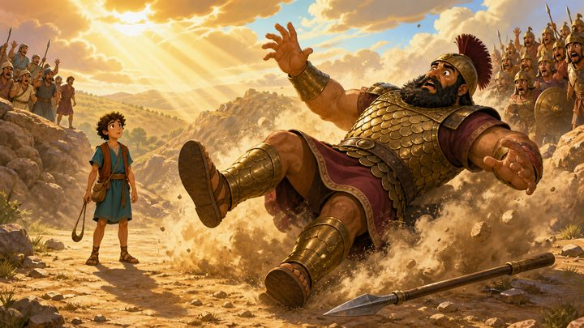
000:50前情提要撒上 17
上禮拜，歌利亞倒下了
先看這張圖，你們還記得嗎？（讓孩子喊）對——上禮拜，大衛打倒了歌利亞。
★ 快問快答：大衛是靠什麼打贏的？石頭很厲害嗎？
（等一兩個回答）不是。他記得神以前救他脫離獅子和熊，所以他說：「爭戰的勝敗全在乎耶和華。」上禮拜那兩句還記得嗎？困難很大——神沒有變小！心裡害怕——記得神的幫助！
今天，大衛要遇到一個比歌利亞更難的敵人。歌利亞可以用石頭打，這一個——他不能打。因為這個人是以色列的王，就是上禮拜不敢出去打歌利亞的那個人：掃羅。
撒母耳記上 17:37, 47（上週故事）
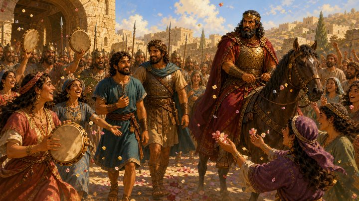
010:45★ 必停害怕
一首歌
大衛打敗歌利亞之後，又打了勝仗回來。城裡的婦女打著鼓出來唱：「掃羅殺死千千，大衛殺死萬萬！」
注意喔，這首歌有稱讚掃羅。可是你看馬上那個人的臉——他是掃羅王，他一點都不高興。
★ 掃羅明明也被稱讚了，他到底在氣什麼？
（等回答）他心裡在想的是：「如果大家都喜歡大衛，那我呢？我的王位會不會被他拿走？」
他不是氣「我沒有」，他是怕「我會失去」。聖經說，從這一天起，掃羅看大衛的眼光就變了。
撒母耳記上 18:6-9
020:25可略害怕
他越做越好，掃羅越來越怕
大衛有做錯什麼嗎？沒有。他照樣替掃羅打仗，每一次都做得很好，大家都喜歡他。
你看山坡上遠遠站著的掃羅。聖經說了好幾次：掃羅懼怕大衛。大衛沒有攻擊掃羅，但掃羅卻開始把大衛當成敵人。
撒母耳記上 18:12-16, 28-30
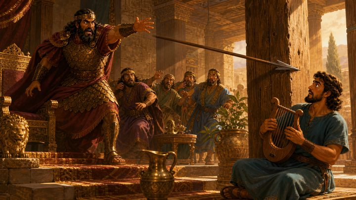
030:35害怕家庭卡 01
槍
以前大衛是掃羅很喜歡的人，會彈琴給他聽。這一天大衛照樣在彈琴——掃羅手上拿著槍，丟了過去。
大衛躲開，槍插進柱子裡。而且不只一次。
你看這個順序：一首歌，變成一個眼神，變成一把槍。
當我害怕失去的時候，我可能會開始用錯的方法保護自己。
撒母耳記上 18:10-11；19:9-10
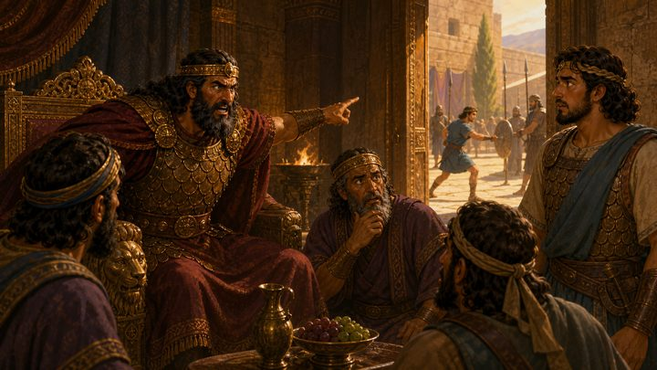
040:40害怕約拿單
王子站在另一邊
槍沒丟中，掃羅乾脆下命令：叫所有的臣僕去殺大衛。
你看站在右邊那個年輕人。他是掃羅的兒子約拿單，是王子。照理說下一個王是他，最該怕大衛的人是他。
可是約拿單是大衛最好的朋友——他曾經把自己的王子外袍脫下來給大衛穿。這一天他對爸爸說：「大衛沒有得罪你，你為什麼要殺他？」然後偷偷去叫大衛快躲起來。
同一件事，爸爸選擇握緊，兒子選擇放手。
撒母耳記上 19:1-7；18:1-4
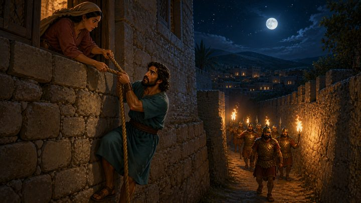
050:35★ 必停害怕
從窗戶下去
掃羅派人半夜包圍大衛的家。大衛的太太米甲用繩子把他從窗戶縋下去。他逃了，從這一晚開始要逃很多年。
★ 大衛是打敗歌利亞的人。他為什麼不留下來跟掃羅打，而是逃走？
（等回答）因為他不要傷害掃羅——可是他也沒有留在那裡讓掃羅一直丟槍。
不報復，不等於不保護自己。有人傷害你的時候，你可以離開、可以說「不要」、可以去告訴老師或爸媽。
教學界線「基督徒被欺負都不能反抗」是課程範例明列的誤講。大衛逃跑，也保護自己——這一句請照著講。
撒母耳記上 19:11-12
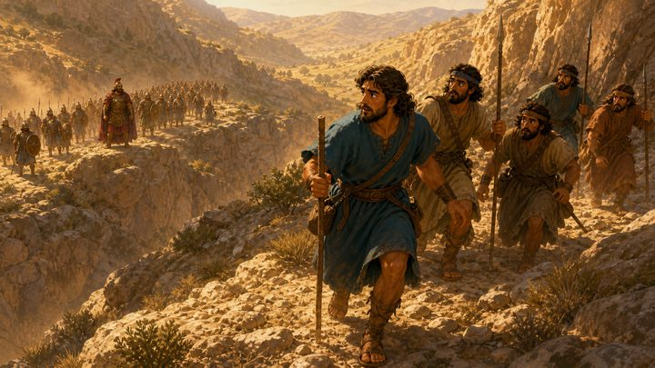
060:40克制
曠野裡的大衛
大衛躲進曠野，掃羅帶著軍隊在後面追——你看對面山上那一長排人。
這幾年大衛過得怎樣？老實說，不怎麼樣。他很害怕，為了拿到食物說過謊；有一次被人羞辱，他氣到帶著四百個人要去報仇，是一位叫亞比該的女士衝出來攔住他，他才停下來。
所以大衛不是從來不生氣、永遠做對的人。他會怕、會衝動、會犯錯。
記住這一點，再看下一張——因為接下來這件事，他做對了。
撒母耳記上 21–23 章；25 章
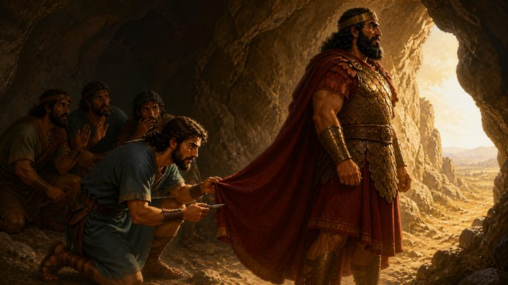
070:55★ 必停．不可略克制全課核心家庭卡 02
洞裡
掃羅帶三千人追到隱基底，一個人走進山洞上廁所。他不知道——大衛和他的人就躲在洞的最裡面。
大衛的朋友小聲說：「就是現在！把他殺掉，你就不用再逃了！而且你本來就會作王啊！」聽起來是不是很合理？
★ 有理由、有機會、也有能力——如果你是大衛，你會怎麼做？
（等回答）大衛悄悄過去，只割下掃羅外袍的一個角。連這樣，他事後心裡都很不安。
有機會做，不代表這件事就是對的。
教學界線「這是神把掃羅交給你」是大衛身邊的人說的，不是神說的。一個看起來很好的機會，不一定代表神要我們這樣做。
撒母耳記上 24:1-7
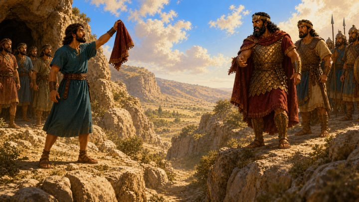
080:45不可略克制關鍵經文
那一角布
掃羅走出洞。大衛在後面喊他，舉起那一角布：「你看，我剛剛可以殺你，我沒有。」
然後他說了今天最重要的一節經文：「願耶和華在你我中間判斷，為我伸冤，我卻不親手加害於你。」
意思是：誰對誰錯，神會處理。報仇不是我的工作。
掃羅哭了，說「你比我公義」。可是你看最後——掃羅回家了，大衛沒有跟他回去，他回山上去了。不傷害他，不等於要回到他身邊。
撒母耳記上 24:8-22
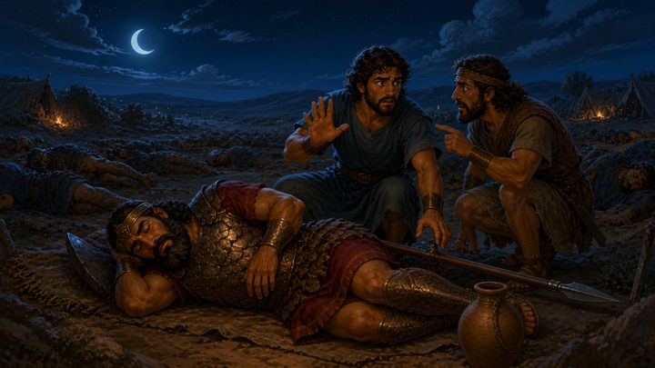
090:35克制家庭卡 03
又一次
後來掃羅又來追。這天晚上掃羅睡著了，槍插在地上，水瓶在旁邊。大衛和亞比篩摸到他身邊。
亞比篩說：「讓我來，一下就好。」你看大衛的手——他擋住了。他只拿走槍和水瓶。
同樣的考試考了第二次，他給了同樣的答案。
大衛已經被選為王了，可是他沒有說「反正神選了我，我做什麼都可以」。好的結果，也不能靠錯的方法得到。
撒母耳記上 26:7-12
100:50等候禱告
大衛怎麼禱告
有一天大衛回到住的地方，城被燒了，家人被擄走，連跟隨他的人都氣到想拿石頭打他。他做對了那麼多次，還是遇到最慘的一天。
你看這張圖——刀放在地上，手是打開的。大衛在禱告。
就像上禮拜他記得神救他脫離獅子和熊——這次他也去找神。他怎麼禱告？他躲在山洞裡的時候寫過一首，聖經裡還找得到：「我發聲哀告耶和華……我在祂面前吐露我的苦情。」他沒有假裝沒事，他把害怕、難過全部跟神說。
說完，他問神：「我該不該去追？」聖經說：「大衛卻倚靠耶和華他的神，心裡堅固。」（後來，人全都救回來了。）
撒母耳記上 30:1-8, 18-19；詩篇 142:1-2
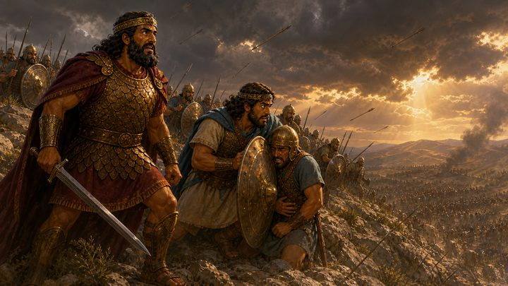
110:30等候
基利波山
北邊的戰場上，以色列人和非利士人打仗，打輸了。掃羅死在戰場上，約拿單也是。
注意一件事：掃羅的王位不是被大衛拿走的。大衛兩次可以動手，兩次都沒有。
王位不是掃羅抓得住的，也不是大衛搶得來的。真正決定誰作王的，是神。
教學界線只說「死在戰場上」，不描述死法。
撒母耳記上 31 章
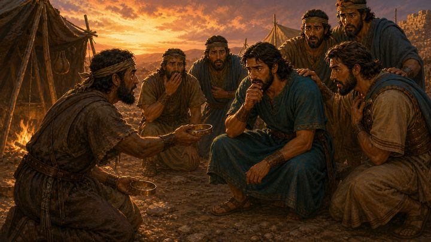
120:15可略等候
王冠送到他手上
有人從戰場跑來，把掃羅的王冠捧到大衛面前。追殺他的人不在了，王冠就在眼前——你看大衛的表情，他高興嗎？
撒母耳記下 1:1-10
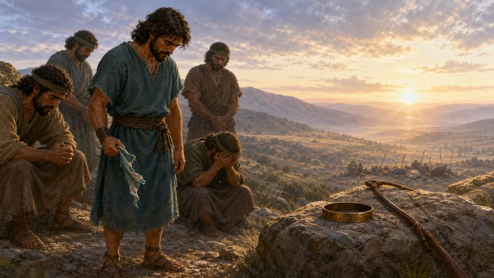
130:40等候
他沒有歡呼
大衛撕開自己的衣服，哭到晚上，跟他的人一起禁食。
他寫了一首歌，把掃羅和約拿單寫在一起：「英雄怎麼倒下了。」石頭上那把弓，是約拿單的。
他沒有說「活該」，也沒有說「太好了，終於」。
受傷時不用報復——連敵人倒下的時候，他都沒有幸災樂禍。
撒母耳記下 1:11-12, 17-27
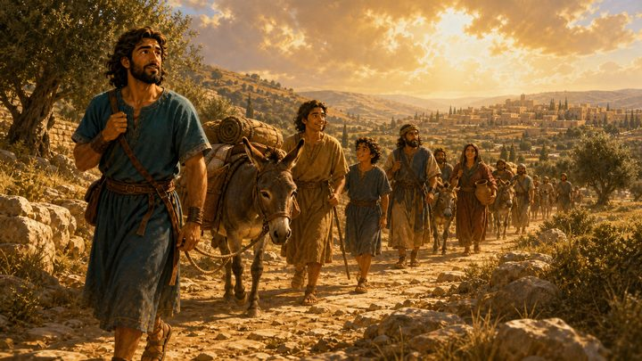
140:45★ 必停等候家庭卡 04
先問，才出發
王位空出來了。大衛已經等了好多年。
★ 敵人不在了，位子也空了。你猜大衛第一件事做什麼？
（等回答）他沒有衝出去宣布「現在我是王」。他先問神：「我可以上去嗎？」神說可以。「去哪裡？」「希伯崙。」
問完了，他才帶著家人和跟隨他的人出發。
他又一次先禱告。等待不是什麼都不做，是在等的時候繼續問神、走下一步。
撒母耳記下 2:1-3
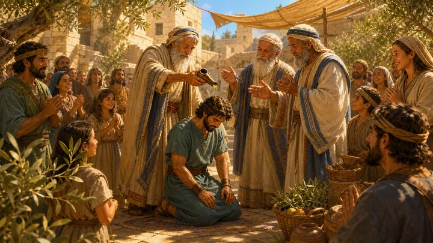
151:05等候禱告收尾
等的時候，他一直在禱告
希伯崙的人來了，把油倒在大衛頭上，立他作王。可是只有猶大一個支派認他，他還要再等七年半。所以這不是「忍一忍就會成功」的故事——大衛等的時候不知道結局。
那他是怎麼撐過這麼多年的？回頭看今天這些圖，他一直在做一件事：禱告。
他的禱告有三個樣子：把真實的感覺說出來（洞裡那首禱告）；不用自己的方法，把對錯交給神（「願耶和華在你我中間判斷」）；求神帶領下一步（「我可以上去嗎？」）。
因為神掌權，害怕、受傷、等不到的時候，我不用傷害、報復或搶奪——我可以像大衛一樣禱告。
等一下老師會給你們一張禱告小卡，就是照著大衛這三步寫的。
撒母耳記下 2:4, 8-11；5:4-5；撒母耳記上 24:12
給大班老師的引導建議
含教材的教學界線
01第 07 幀是全課的核心。提問之後要真的等。孩子會分兩派，「他是壞人，應該殺」那一派請讓他們講完——那正是大衛朋友的立場，聽起來很合理。答案揭曉後回頭說一句：「你們剛剛講的，大衛的朋友也是這樣想的。」
02第 08 幀不能砍，它帶著關鍵經文，也是第 07 幀的煞車。最後一句「大衛沒有跟他回去」請照著講。只講「不親手加害」而不講這一句，孩子可能學到「別人對我不好，我只能忍」。
03「被欺負不能反抗」是課程範例明列的誤講（第 05 幀）。大衛對危險的反應從頭到尾都是離開。如果班上有孩子正被大人或學長姐欺負，這一幀是講給他聽的。生活應用情境 2 的 C 選項（保護自己、找老師大人幫忙）正好接這一句。
04掃羅不要講成純粹的壞人（第 01-03 幀）。課程範例開頭就說這不是「好人 vs. 壞人」。班上一定有孩子此刻就是掃羅的感受。請把它講成一種需要被留意的害怕，可以直接說：「這種感覺老師也有過。」
05不要把結尾講成「等久了就會成功」（第 15 幀）。這是課程範例的第一條界線。台詞用「他還要再等七年半」和「他在等的時候不知道結局」來擋，請不要為了收得漂亮而省略這兩句。
06大衛的錯要留著（第 06 幀）。說謊和拿八兩件事沒有圖，只有口述，很容易被跳過。它們是讓孩子「最後信靠的對象是神而不是大衛」的關鍵。挪伯祭司被殺的後果這一課不講，孩子若追問說謊的結果，可以答：「有人因此受了很大的傷害，大衛後來承認是因為他。」
07掃羅之死只說「死在戰場上」（第 11 幀）。不描述自刎。若高年級孩子知道細節並當場說出來，簡短承認「對，經文是這樣寫的」，不延伸，也不對「這樣死的人會怎樣」下判斷，課後再個別談。第 12 幀同樣不講報信者後來被處死。
08約拿單只有第 04 幀有機會講。圖裡站在右邊的年輕人可以當作他。重點是對比：他是唯一有資格跟大衛搶的人，卻選擇放手。第 11、13 幀提到他的死時，孩子才會有感覺。
09「惡魔從神那裡來」（18:10）不要主動打開。台詞刻意略過。若孩子問，可以說：「聖經在描述掃羅的狀態越來越糟，這句話很難，大人也還在讀。」不要把掃羅的狀態講成精神疾病，也不要把精神疾病講成犯罪的結果。
10禱告要講成大衛真的做過的事，不是故事外加的道理。#10 的詩篇 142 篇標題就是「大衛在洞裡作的訓誨詩，乃是祈禱」——同一個洞（#07）。可以讓孩子看見：大衛禱告的時候是在害怕、在躲、在等，不是在一切都很好的時候。
11#15 只「預告」禱告小卡，不要自己帶禱告。禱告小卡和全班一起禱告留給生活應用的老師。故事老師講完最後一句就交棒，兩段才不會重複。
12與耶穌的連結要先講好誰來講。課程範例第九段用腓立比書 2 章連結耶穌「不以與神同等為強奪的」。故事 15 幀裡沒有放；禱告小卡結尾是「奉主耶穌的名禱告」，建議由生活應用的老師在禱告小卡之前用一兩句帶到，請事先對好。
13時間快超過時的取捨順序：先砍第 02、12 幀（共省 40 秒）。不要砍第 07、08 幀（核心與關鍵經文），也不要砍第 15 幀（禱告的交棒點）。
15前情提要只抓上週的兩個字：「記得」。上週課程範例的主軸是「看見 → 記得 → 行動」。#00 讓孩子回想大衛記得神救他脫離獅子和熊，#10 再回收一次：這一次他也去找神。上週的三句話這裡只複習前兩句，第三句「勇敢走下一步」留給 #14 的「求問神、走下一步」。
14哪些是範例、哪些是另外編的。主軸、三節點、關鍵句、教學界線取自 10 月課程範例；給孩子的話、生活應用與禱告小卡取自負責老師的教材。標題《不伸手》、「看他的手」的角度、#04 約拿單的對比、#06 提到亞比該、#10 詩篇 142 篇的禱告線，是依範例方向另外編的。